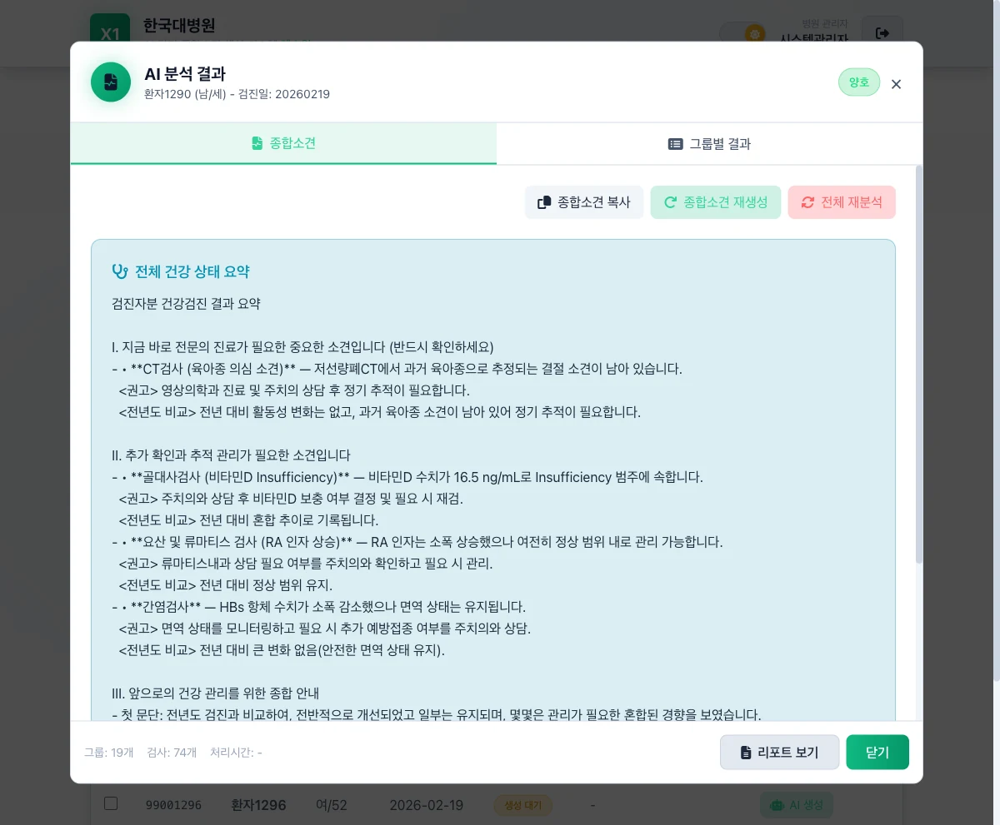
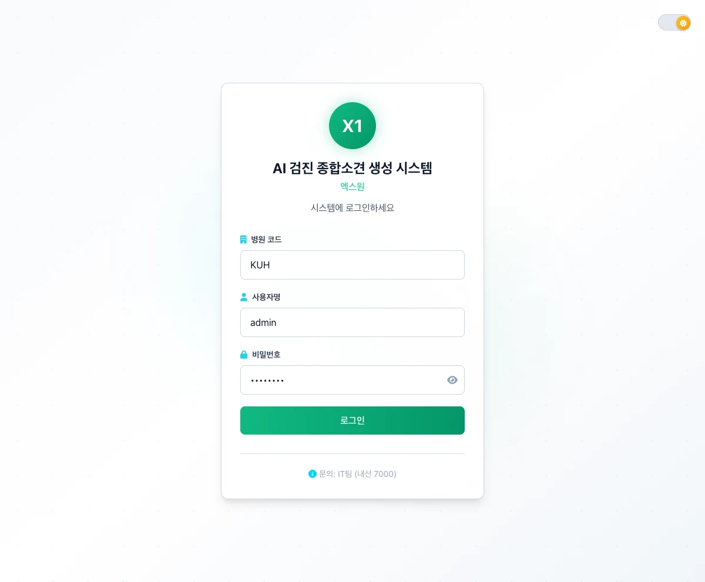
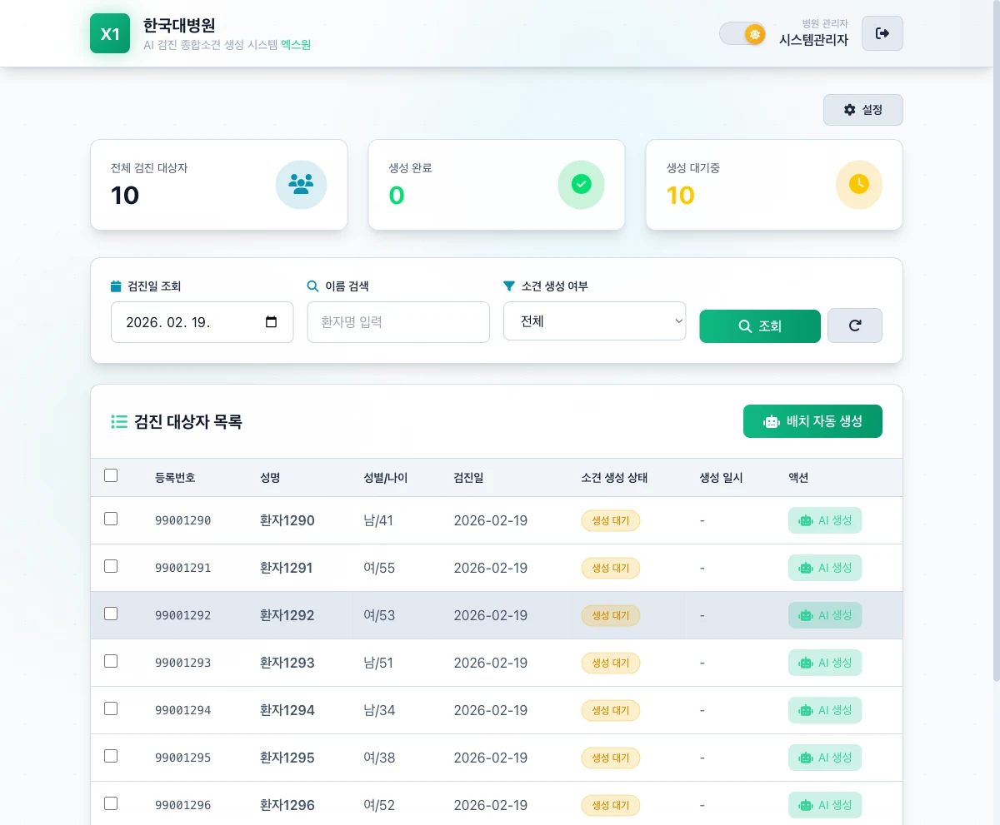
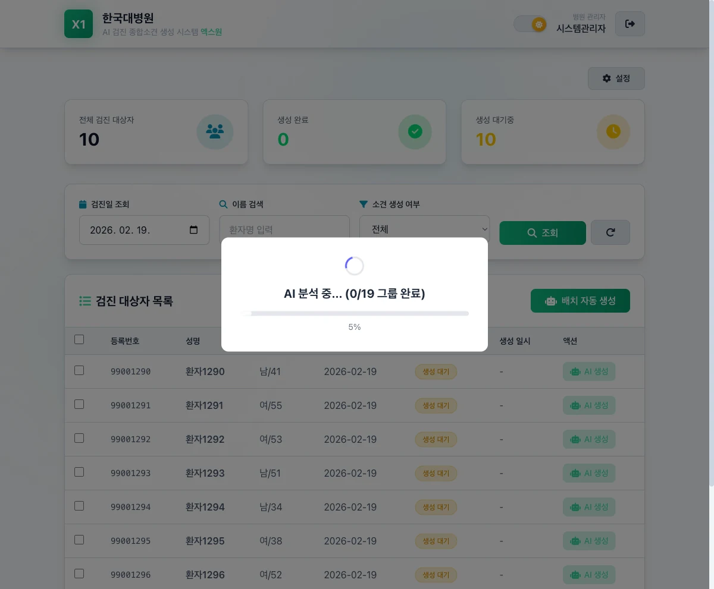
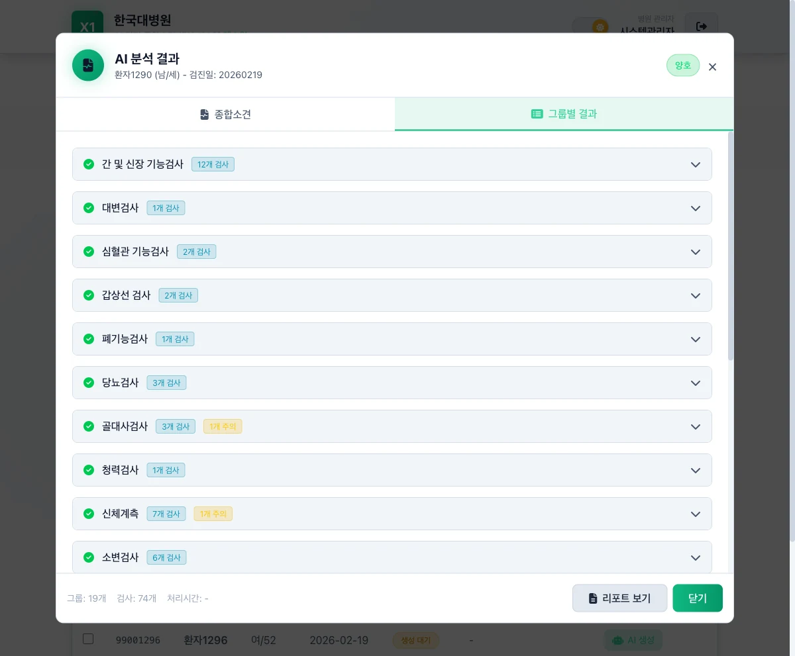
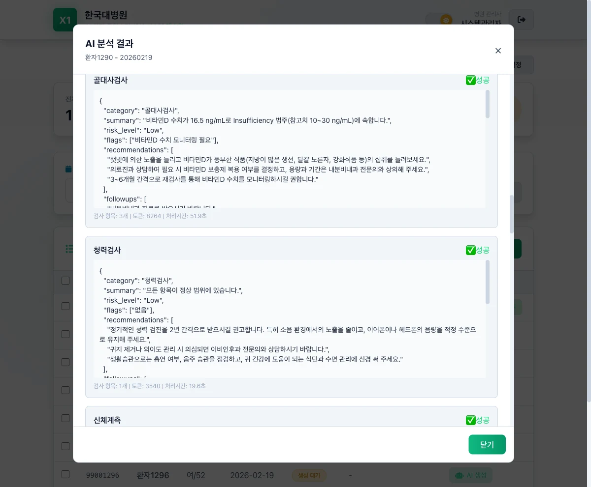
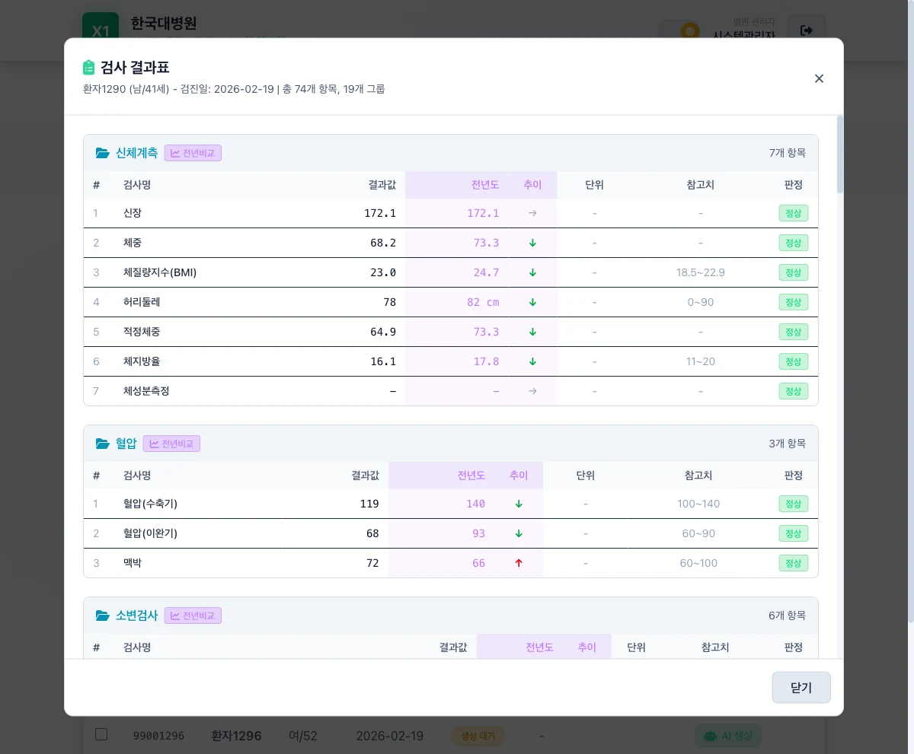
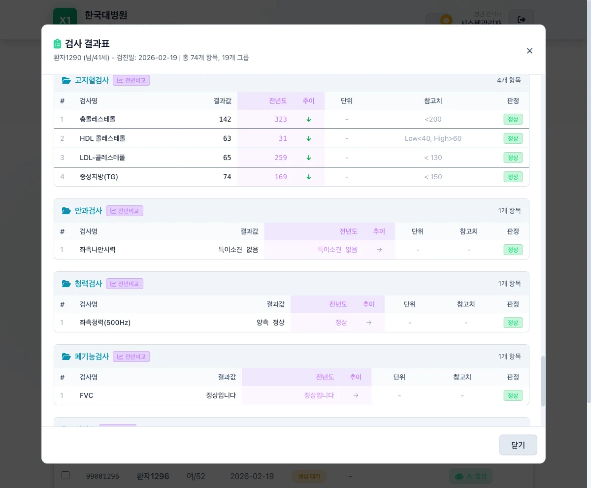
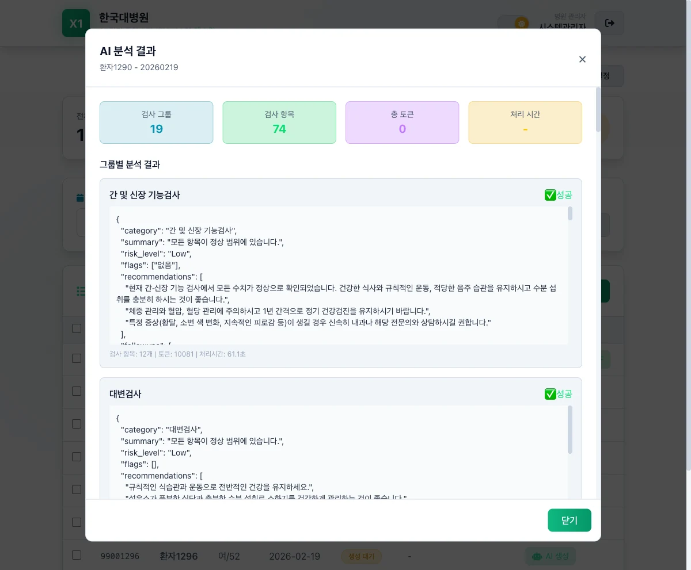
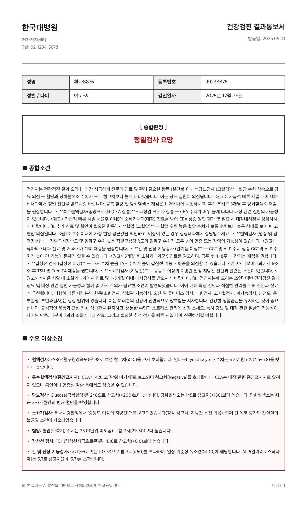

A result sheet is a wall of numbers and reference ranges. MediReport pulls a hospital's screening results — blood, urine, imaging, functional tests — and has generative AI write what each one actually means, at the level of the person examined.
Built for the clinicians and administrators in a hospital screening centre — the people who deliver results to the person examined.

What it does
Results inside the reference range are explained in a way that lets someone stop worrying about them.
Anything outside the reference range comes with its clinical meaning and the department to consult — not just a flag.
Group findings are gathered into one overall opinion, ordered by urgency, and typeset into a result notice ready to hand over.
Multi-tenant. Each hospital runs on its own accounts and data — a hospital identifier is carried in the sign-in token, and every request is isolated to that hospital.
Screens
Screens shown with demo data.









Under the hood
Group results, category-level clinical hints and patient attributes (sex, age) are composed into the prompt. Direct identifiers — name, patient number, date of birth — are stripped before anything is sent to the AI.
The model is forced to answer only in a fixed JSON schema — category, summary, risk level, flags, recommendations, follow-ups — so nothing free-form reaches the report.
Anything coming back as High risk is marked for mandatory clinician review, and every result carries an AI-generated disclosure.
Group results are gathered a second time to produce the overall opinion, ordered so the most urgent item is read first.
The default is a hosted OpenAI GPT API. For hospitals that require analysis to stay on the internal network, it switches to an on-premise model such as MedGemma on KT GPU infrastructure.
| demo | Result lookup, AI analysis and reports — the screening-centre workstation React 19 · TypeScript · Vite · Tailwind |
| admin | Test groups, clinical hints and prompt management React 19 · TypeScript · Zustand · React Query |
| backend | Authentication, analysis orchestration, AI integration, API Spring Boot 3.2 · JPA · JWT · PostgreSQL |
| data | Screening data and analysis results, read-only link to the hospital EMR PostgreSQL 15 |
Test results are read from the hospital EMR read-only and used as analysis input; nothing is written back.
Pay only for reports generated, settled in $SL credit.
Institutions pre-purchase credit in bulk (fiat), converted to $SL on the backend — the familiar AI-API model. No crypto handling required.